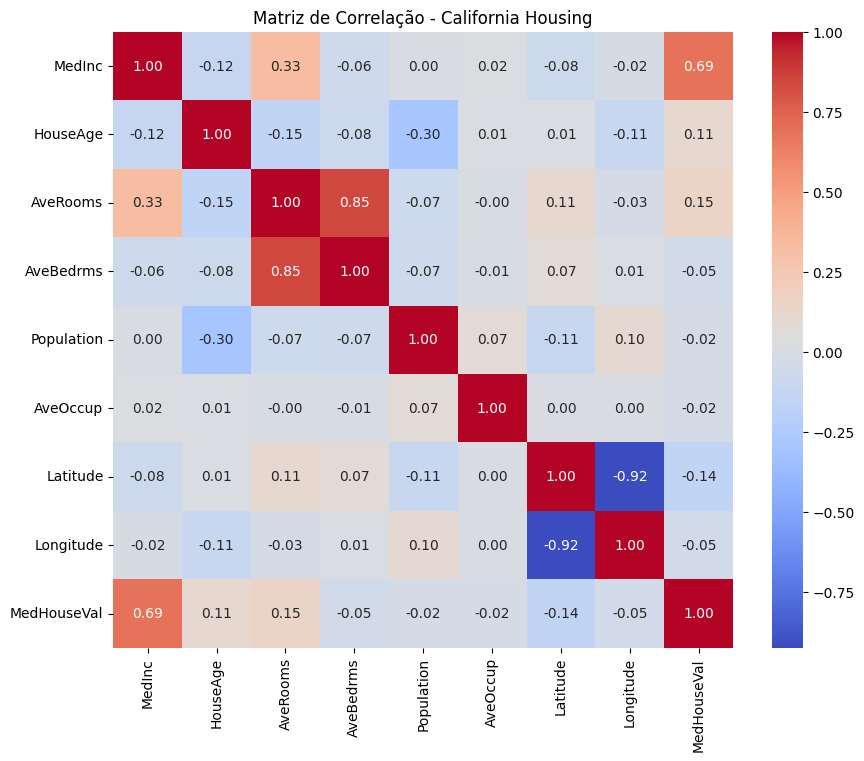

01. Diagnóstico Estratégico
Volume
20.640 registros censitários.
Velocidade
Processamento em tempo real via Python.
Variedade
Dados numéricos e geográficos.
Veracidade
Limpeza de dados via Sklearn.
Valor
Predição de ativos imobiliários.
02. Modelagem e Ciência de Dados
Implementação de modelos para extração de padrões e previsões imobiliárias.
- PCA: Redução de 8 para 3 componentes principais preservando a variância.
- K-Means: Segmentação em clusters baseada em latitude/longitude e renda.
- Regressão: Estimativa de preço com validação cruzada.
03. Insights de Negócio
Taxa de Conversão
10.0%Sentimento Geral
Positivo04. Análise Visual de Dados

A matriz revela que a 'Renda Média' é o preditor mais forte para o valor dos imóveis.
05. Implementação Técnica
from sklearn.decomposition import PCA
from sklearn.cluster import KMeans
from sklearn.linear_model import LinearRegression
# Execução do modelo de Regressão
model = LinearRegression()
model.fit(X_train, y_train)
r2_score = model.score(X_test, y_test)
print(f"Precisão do Modelo (R²): {r2_score:.2f}")06. Status do Ambiente
Carregando interpretador...
07. Ética e Governança
Este projeto segue as diretrizes da LGPD, utilizando dados públicos anonimizados para evitar vieses algorítmicos.